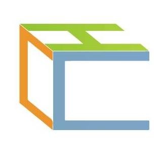

2017 匯流法討論會 2017/2/18 MozTW 與推動網路中立性立法粉絲團合作，這一天我們邀集數十位關心「數位通訊傳播法」與「電信管理法」等兩部匯流法草案的朋友與業界先進，一起在摩茲工寮閱讀與討論法條，並彙集意見送到政府 Join 意見募集平台及承辦人信箱。
104 學年度第二學期，MozTW 持續偕同 OSSACC 教育部校園自由軟體中心，共同執行服務學習專案。共有三位台師大資訊社的學生貢獻個人時間，協助貢獻 Servo 專案、翻譯 Amara 影片與 Mozilla Links 文章等事項，在此彙整所有同學的成果。 2016/2~6 
SUMO 王國群雄爭霸，小莎軍團正在招兵買馬！ 2015/12/19 根據先遣隊的回報，王國東南方的雨林深處，發現了為數眾多的神秘遺跡，這些遺跡很可能是古 SUMO 王國的一部份！為了探索出更多有用的情報，我們必需突破重重難關，並設法開啟被封印的深層遺跡！
103 學年度第二學期，MozTW 持續偕同 OSSACC 教育部校園自由軟體中心，共同執行服務學習專案。經交通大學資訊工程學系 林正中教授指導，共有九位學生貢獻個人時間，協助翻譯網路開發文件、技術支援文件、Webmaker 教案、Mozilla Links 新聞與 Firefox OS 除錯等工作。 2015/2~6
MozTW Steps 2014 春: 台中 2014/3/15 為期兩天，邀集對 Mozilla 開源專案有熱情的夥伴們合作撰寫 2014 年下半年度的 Mozilla 相關專案貢獻企劃、設定目標，並同時產出影片、Blog posts、文件等，吸引更多社群成員加入 MozTW 貢獻自己的能量。
Error 451: 本網頁依據國家法律而封鎖 2013/06 如果我們同意提供政府這種權力，以後他們還能以各種理由，任意阻擋他們覺得「不適當」的網站。未來許多網站可能被迫自我審查，在你發言的同時，先看看有沒有「敏感詞」。我們不希望這種事情也在台灣發生，請您與我們一同反對政府將手伸進網路！ 響應 #網路全黑日，MozTW（Mozilla 台灣社群）提供以下語法，只要加到網站，使用者進站時即會看到 Blackout 451 畫面。
ICOS 2013 - HTML5 主題議程 2013/04 MozTW、JavaScript.tw 社群的 TonyQ 及教育部校園自由軟體中心合力企劃，參與 ICOS 2013 開放源碼國際研討會，為大家帶來一整天的 HTML5 主題議程，希望能讓所有關心網路技術，希望將其運用於教育領域的老師、行政人員與各位朋友，都能透過此議程的概略介紹，掌握 HTML5 各面向的基礎概念。
Firefox OS App/套件開發小趴 2013/03 這是一個大家一起來研究如何撰寫 Firefox OS 下 Open Web App 的 hackathon，歡迎大家組隊（或個人）參加！Firefox OS 是一個以 HTML5 作為基底的手機作業系統，能讓開發者透過 HTML + CSS + JS 開發應用程式。不管你有什麼點子，喜歡寫 Code 或做設計，只要你想在 Open Web 上開發什麼，都歡迎來參加喔！
Code Rush 放映會 2012/09 九月 15 日是國際軟體自由日（Software Freedom Day），MozTW 將在台北真善美戲院播映《Code Rush》紀錄片，一同慶祝這個自由軟體的全球慶典。
夏日的 Web 樂園 2012/07 Mozilla 的 Webmaker 計畫以簡便的工具，讓人們學習撰寫簡單網頁的技能。Webmaker Summer Code Party「夏日的Web樂園」由海洋大學網路發展協會 、MozTW 社群及美商謀智（Mozilla Taiwan），邀請各社群共同籌辦，以園遊會呈現各種參與網路的方式，帶領你在網路上留下足跡。
Firefox x Ubuntu 12.04 Release Party 2012/05 從 4.0 開始進入快速更新週期的 Firefox 12，與每半年一版，兩年一長期支援的 Ubuntu 12.04 LTS Precise Pangolin，分別於 4 月 23 及 26 日正式釋出。為了響應如此難得的機會，MozTW 與 Ubuntu-TW 將在台中聯合舉辦 Party 啦！
反對網際網路言論審查 2012/1 MozTW 在此聲援 Mozilla 及所有網路自由鬥士：正於美國國會審議之 SOPA及 PIPA 法案，以保護智財權之名、阻擋網站瀏覽之手段，要求內容服務網站（如社群網站、搜索引擎）進行自我審查，有限縮言論自由、危害網路發展之虞，且與 Mozilla 宣言「網際網路應保持開放」之核心價值相悖，我們反對 SOPA、PIPA 及任何型態之網際網路言論審查。
2011 SFD Party 2011/09 繼去年 MozTW SUMO Party & Software Freedom Day 之後，今年 MozTW 也秉持一樣的想法，希望能在軟體自由日當天舉辦小活動，讓大家可以過來聚一聚，可以更認識 MozTW，也知道最近自由軟體的世界當中有什麼新鮮事，並且加入大家......
Jetpack 擴充套件工作坊 2010/03 Jetpack 是 Firefox 全新的擴充套件開發框架，比起現有的擴充套件架構更為直接、簡單。工作坊由 OSSF 和 MozTW 聯手合作......
用 Firefox 體驗 IE8 功能 2009/04/01 在 2009 年的愚人節，MozTW 使用此頁跟大家開了一個玩笑…… 玩笑？當然不只如此！現在就跟我們一起藉助 Firefox 超強擴充功能，馬上體驗 IE8 的新功能吧！
MozTW Foxmosa 情人節電子賀卡 2009/02/14 寄張特別的卡片，給特別的她！讓 Foxmosa 代您傳情意，限量供應喔！這大概是 MozTW 最急速發動的活動之一！寄張電子卡片、歡慶屬於你倆的節日......
Firefox 3 Party 2008/07/19 第三屆社群嚴選附加元件票選活動即將於 7/1 開始接受提名、7/22-8/12 投票。歡迎提名好用的套件，提供初學者更快上手的入門選擇！投票結果將於 addons.mozilla.org 正體中文區同步推......
Firefox 2 Party 2006/11/12 想多認識 Firefox 2？十一月中起，參加 Firefox 校園巡迴推廣講座，再造網路新體驗！我們將介紹 Firefox 2 的特異功能，帶您了解在全球造成「火狐熱」的原因。